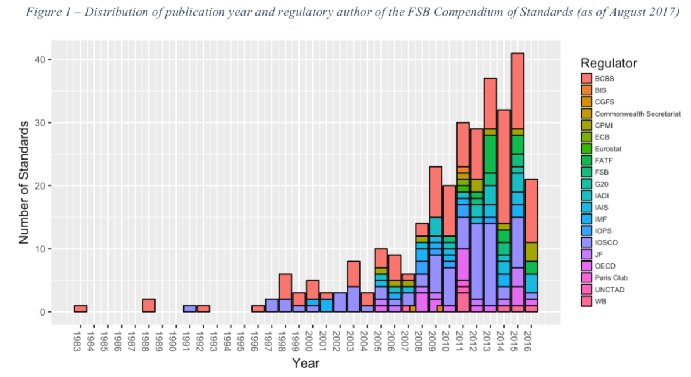
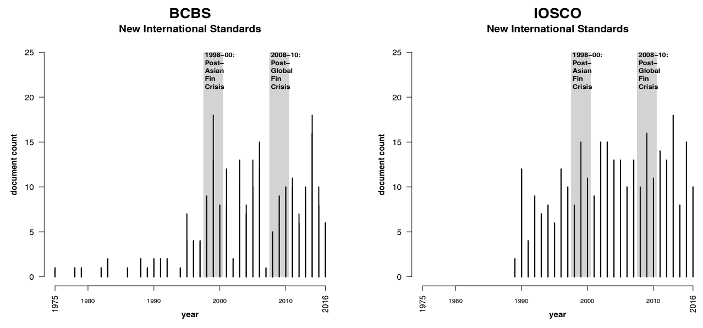
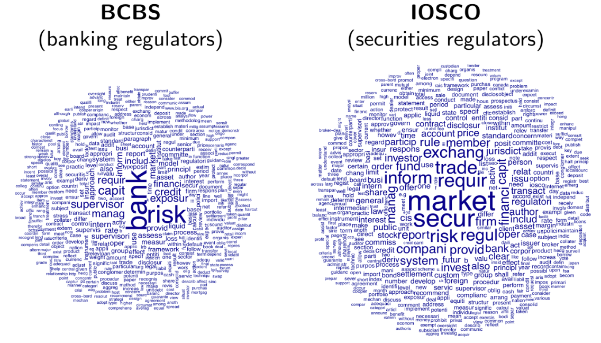
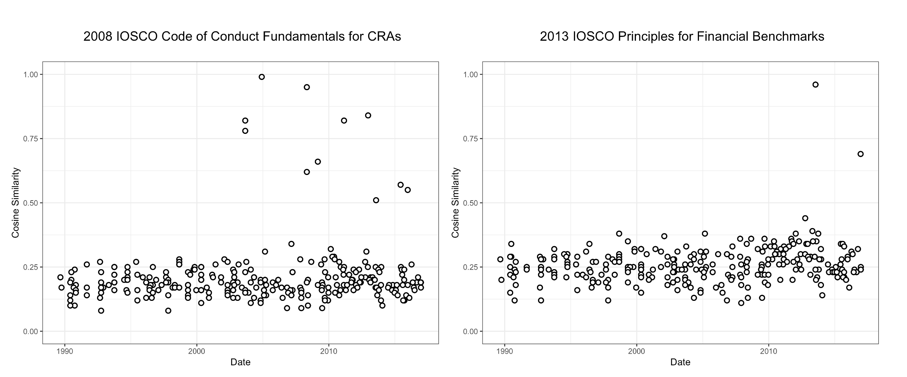
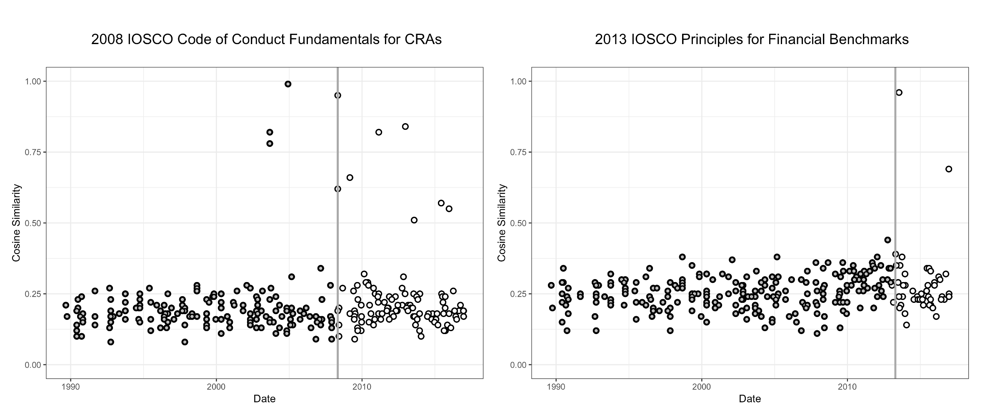
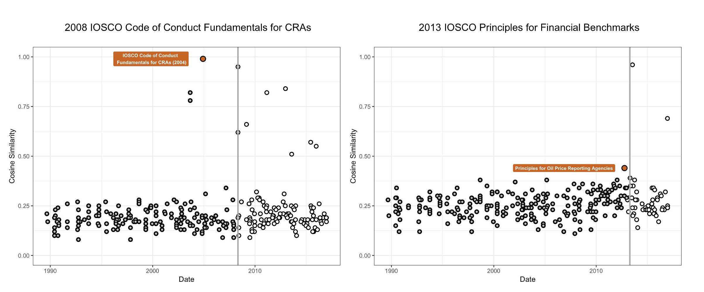
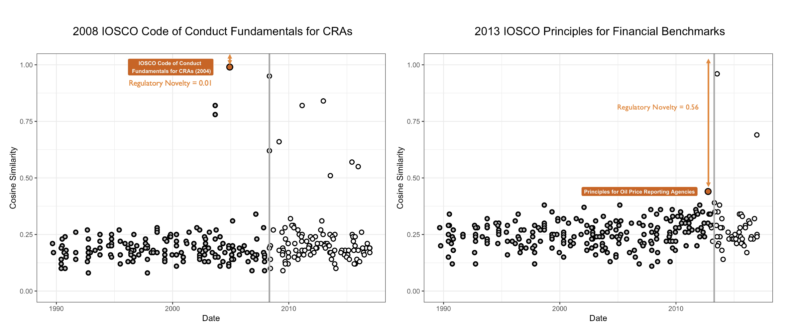

Co-ordination and hierarchy across transnational financial regulatory networks
Stefano Pagliari
City, University of London
King’s College London, 16 June 2022
International Financial Regulation Over Time
Literature: focus on single or comparative case study analysis
Before the crisis: banking (Kapstein 1989; Oatley and Nabors 1998), securities (Underhill 1995), insurance (2004)
After the crisis: hedge funds (Helleiner and Pagliari, 2009), derivatives (Knaack, 2015), resolution regimes for too-big-to-fail financial institutions (Quaglia, 2017), and shadow banking (Rixen, 2013; Ban, Seabrooke and Freitas, 2016).
International Banking and Securities Regulations
Corpus
Regulatory Novelty
Regulatory Novelty
Regulatory Novelty
Regulatory Novelty
Regulatory Novelty and Financial Crises

Standard-Setting Bodies in International Finance
Corpus
Interaction between International Institutions
Unilateralism or lack of cooperation
Pooling of resources (Clark 2021)
Joint decision-making (Widerberg 2016)
Orchestration (Abbott et al. 2014)
Deference (Pratt 2018)
Informal communication (Widerberg 2016).
Creation of formal collaboration forums (Gest and Grigorescu 2010)
Co-Authorship in Int’l Financial Regulation
Co-Authorship in Int’l Financial Regulation

Co-Authorship in Int’l Financial Regulation

Citations Analysis
Different studies have explored textual references to another body or agreement
Citations in treaties (Kim 2013)
Citations in official documents published by public or private international organizations (Perez and Stegmann 2018; Murdie 2013)
“Recognition” of one institution by another (Green 2013, 2017)
Endorsement and deference of one institution by another (Pratt 2018)
Citations Across Time

Who Cites?

Who Cites Whom?
Interpreting Citations
“In April this year, the IMF and World Bank published an expanded and updated version of the 2002 report.” (Financial Stability Board)
“The FSB endorsed the IOSCO Principles for Financial Benchmarks (IOSCO Principles) published in July 2013 which cover the important issues of benchmark governance, integrity, methodology, quality and accountability” (Financial Stability Board)
“In particular,the IAIS is a member of the FSB, founding member and co-parent of the Joint Forum, along with the BCBS and IOSCO” (IAIS)
Empirical Approach
Natural Language Processing: application of computational techniques to understand text and spoken language
- Sentence Segmentation,
- Tokenization/Lemmatization,
- Part-of-Speech tagging,
- Dependency parsing:
- All the steps are done using UDPipe (Straka and Straková 2017): open-source and trainable parser.
Tokenization

Part of Speech Tagging

Dependency Parsing
Task of analyzing the dependency structure of a given input sentence automatically
Annotation scheme developed by the Universal Dependencies project (de Marneffe et al. 2021)

Dependency Parsing

Analysis
Identify the clauses (verbs) in the corpus
Identify the nominals (noun phrase) that are dependent to those verbs
Identify the position of the nominals vis-a-vis the verb
nominal subject (
nsubj): “Maria left”direct object (
obj): “Maria has left a note”indirect object (
iobj): “Maria could have left Pedro a note”
Filter nominals that refer to an international institution
Verbs associated with International Financial Institutions

Verbs Linking Different Institutions
Next Steps
- Validate, validate, validate
- Build dictionary to associate verbs with different types of coordination/hierarchy among IOs
- Validate, validate, validate
- Use approach to text the determinants of different types of coordination hierarchy
- Explore the impact of observed patterns of cooperation over the content of the rules
Additional Slides
Part of Speech Tagging
| Traditional POS | UPOS | Category |
|---|---|---|
| noun | NOUN |
common noun |
PROPN |
proper noun | |
| verb | VERB |
main verb |
AUX |
auxiliary verb or other tense, aspect, or mood particle | |
| adjective | ADJ |
adjective |
DET |
determiner (including article) | |
NUM |
numeral (cardinal) | |
| adverb | ADV |
adverb |
| pronoun | PRON |
pronoun |
| preposition | ADP |
adposition (preposition/postposition) |
| conjunction | CCONJ |
coordinating conjunction |
SCONJ |
subordinating conjunction | |
| interjection | INTJ |
interjection |
| - | PART |
particle (special single word markers in some languages) |
| - | X |
other (e.g. words in foreign language expressions) |
| - | SYM |
non-punctuation symbols (e.g. a hash (#) or emojii) |
| - | PUNCT |
punctuation |
Taxonomy of Dependency Relations/1
Source: (de Marneffe et al. 2021)
acl: adnominal clause; finite or non-finite clause modifying a nominaladvcl: adverbial clause modifying a predicate or modifier wordadvmod: adverb or adverbial phrase modifying a predicate or modifier wordamod: adjectival modifier of a nominalappos: appositional modifier; a nominal used to define, name, or describe the referent of a preceding nominalaux: auxiliary; links a function word expressing tense, mood, aspect, voice, or evidentiality to a predicate
Taxonomy of Dependency Relations/2
case: links a case-marking element (preposition, postposition, or clitic) to a nominalcc: links a coordinating conjunction to the following conjunctccomp: clausal complement of a verb or adjective without an obligatorily controlled subjectclf:(numeral) classifier; a word reflecting a conceptual classification of nouns linked to a numeric modifier or determinercompound: any kind of word-level compounding (noun compound, serial verb, phrasal verb)conj: conjunct; links two elements which are conjoined
Taxonomy of Dependency Relations/3
cop: copula; links a function word used to connect a subject and a nonverbal predicate to the nonverbal predicatecsubj: clausal syntactic subject of a predicatedepunspecified dependency, used when a more precise relation cannot be determined det determiner (article, demonstrative, etc.) in a nominaldiscourse: discourse element (interjection, filler, or non-adverbial discourse marker)dislocated: a peripheral (initial or final) nominal in a clause that does not fill a regular role of the predicate but has roles such as topic or afterthoughtexpl:expletive; links a pronominal form in a core argument position but not assigned any semantic role to a predicate
Taxonomy of Dependency Relations/4
fixedfixed multiword expression; links elements of grammaticalized expressions that behave as function words or short adverbialsflat: flat multiword expression; links elements of headless semi-fixed multiword expressions like namesgoeswith: links parts of a word that are separated but should go together according to standard orthography or linguistic wordhoodiobj: indirect object; nominal core argument of a verb that is not its subject or (direct) objectlist: links elements of comparable items interpreted as a list
Taxonomy of Dependency Relations/5
mark: marker; links a function word marking a clause as subordinate to the predicate of the clausenmod: nominal modifier; a nominal modifying another nominalnummod: numeric modifier; numeral in a nominalnsubjnominal subject; nominal core argument which is the syntactic subject (or pivot) of a predicateobj: object; the core argument nominal which is the most basic core argument that is not the subject, typically the most directly affected participantobl: oblique; a nominal functioning as a non-core (oblique) modifier of a predicate
Taxonomy of Dependency Relations/6
orphan:links orphaned dependents of an elided predicateparataxis:links constituents placed side by side with no explicit coordination or subordinationpunct: punctuation attached to the head of its clause or phrasereparandum: repair of a (normally spoken language) disfluencyroot: root of the sentencevocative: nominal directed to an addresseexcomp: clausal complement of a verb or adjective with an obligatorily controlled subject